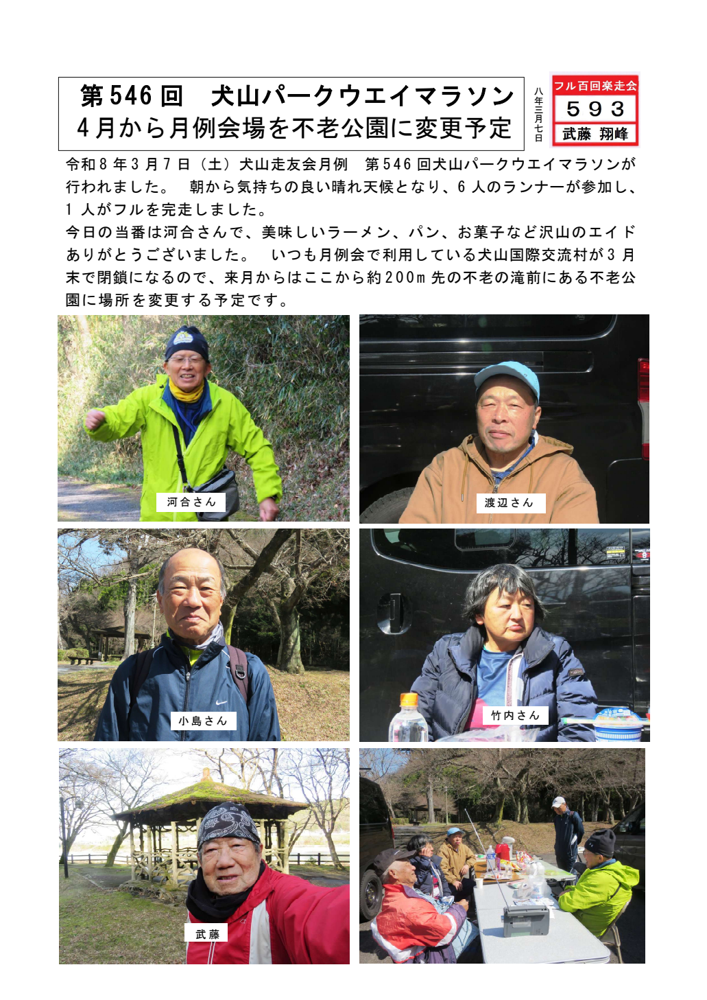

2026-03-07 17:55:56
2026年3月7日（土曜日）（場所：氷室公園 天候：晴れ 気温：11℃）（エイド担当：河合さん）
| No | 氏名 | 種目 | タイム | フル百 |
|---|---|---|---|---|
| 1 | 渡辺 和次 | 4km | 0:50:00 | 804 |
| 2 | 武藤 彰 | 10km | 2:27:33 | 593 |
| 3 | 小島 博史 | フル | 7:41:24 | 745 |
| 4 | 石原 久行 | 4km | 0:50:00 | 520 |
| 5 | 竹内 弥富 | 14km | 2:50:00 | 647 |
| 6 | 河合 邦純 | 8km | 3:00:00 | 549 |
コメント（渡辺）
天気は晴れていました冷たい風が吹き寒く感じる状況で6人の参加者でした。
エイド担当して頂いた河合さんには感謝します。
いつも使用している氷室公園が今月を持って閉鎖となり、来月の月例犬山は約200ｍ奥にいった不老の滝前の不老公園に変更予定しています。
明日は名古屋大運動会（名古屋ウィメンズマラソン＆シティマラソン）開催によるスタート/ゴール周辺には多くの女性ランナーで賑わっていました。
